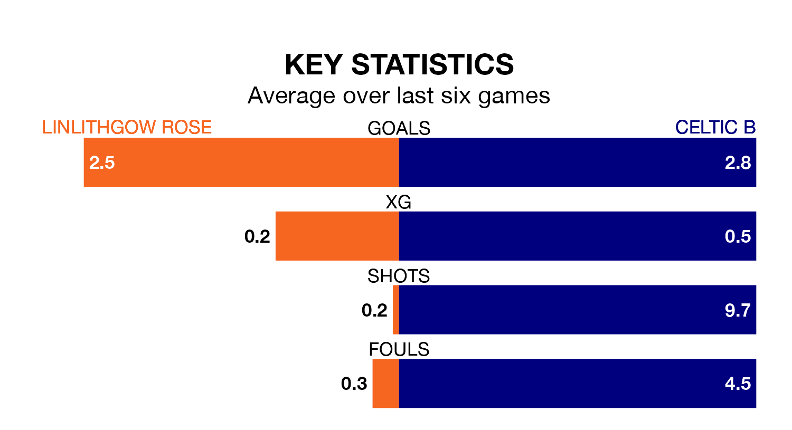

Celtic B face a challenge to maintain their high-scoring form away against a tight Linlithgow Rose defence on Saturday.
With 49 goals in 22 games, Celtic B are the third-highest scorers in Lowland Football League ahead of the 3pm kick-off at Prestonfield.
They face a Linlithgow Rose side who have scored 40 in 20 matches, but conceded only 22 goals, putting them third among the league's tightest defences – only Tranent Juniors and Albion Rovers have conceded fewer goals.
Linlithgow Rose are in good form in Lowland Football League, with four wins and two draws from their last six games.
With three wins and a draw over that period, Celtic B's form is worse – they have taken 10 points from 18, compared to the home side's 14.
Linlithgow Rose are seventh in the table after 20 games, of which they have won nine and drawn seven, earning 34 points.
The visitors are one place behind Linlithgow Rose in eighth, with 10 wins and three draws putting them on 33 points.
Linlithgow Rose's last match was on January 13, a 1-1 draw against East Stirlingshire.
Celtic B beat Edinburgh University 3-0 last time out, also on January 13.
Updated: 09:07 (UTC), 24/01/24